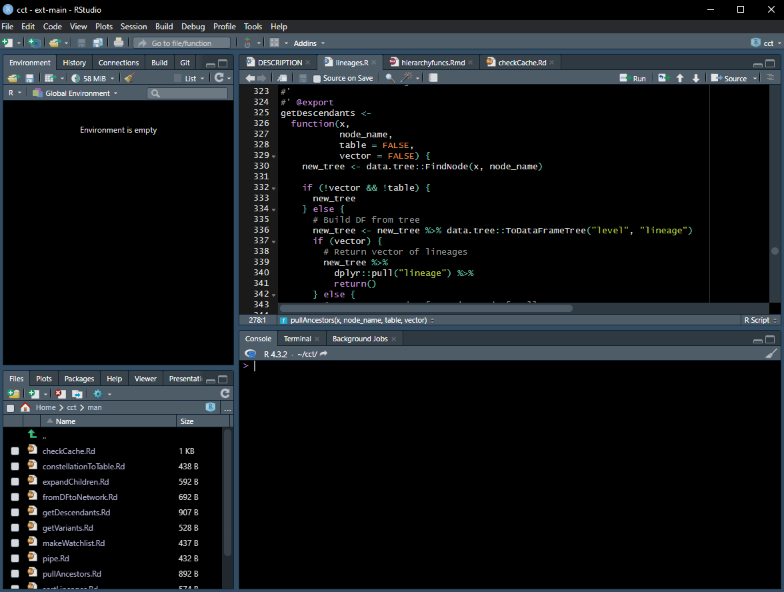

[1] "C:/Users/azetner/Documents/quarto-presentations"Best Practices in R
Adrian Zetner
2024-01-31
Best Good Enough Practices in R
Introduction
Seminar Goals
- What to take away from this seminar
- Ideas, resources, methods to improve future work
- What not to take away from this seminar
- Any rush to apply these ideas retroactively to all previous projects
- Inspiration and content from sources listed at the end
Table of Contents
- Project Oriented Workflow
- Readability
- Reproducibility
Project Oriented Workflow
Why?
Work on More Than One Thing at a Time
Team Collaboration
- Easier concurrent work
- Easy distribution
Start and Stop
- Flexible work schedule
- Regularly checkpoint the project to save progress
Documentation for Continuity
- Easy resumption
- Context and guidelines
How?
- Standardized organization of files per project
- Consistent actions
Organization of Project Directories üìÇ
Organization of Project Directories üìÇ
- Project Organization:
- Folder per project.
- Top-level advertisement
- RStudio/Git/{here} characteristic files
- Path Construction with
here():- Utilize
here()function. - Paths relative to top-level.
- here package.
- Utilize
{here} Package üìÇ
here() displays top-level folder location
{here} Package üìÇ
Build a path to something in a subdirectory and use it.
[1] "C:/Users/azetner/Documents/quarto-presentations/presentations/20240131-RBP_images/analysisworkflow.png"[1] "C:/Users/azetner/Documents/quarto-presentations/presentations/20240131-RBP_images"arrow.file <- here("presentations/20240124-BWG_images/arrow_dataset.png")
file.info(arrow.file)["size"] size
C:/Users/azetner/Documents/quarto-presentations/presentations/20240124-BWG_images/arrow_dataset.png 79441Folder Structure üìÇ

- Folder Structure:
- Data
- Code
- Documentation
- External scripts
- Outputs
- Start project from root
- Console or IDE
RStudio Projects üìÇ
RStudio Projects üìÇ
Settings stored in
<NAME>.Rproj.Open Project in RStudio:
- Dedicated R instance.
- File browser points to Project directory.
- Working directory set to Project.
Version: 1.0
RestoreWorkspace: No
SaveWorkspace: No
AlwaysSaveHistory: Default
EnableCodeIndexing: Yes
UseSpacesForTab: Yes
NumSpacesForTab: 2
Encoding: UTF-8
RnwWeave: Sweave
LaTeX: pdfLaTeX
AutoAppendNewline: Yes
StripTrailingWhitespace: Yes
LineEndingConversion: Native
BuildType: Package
PackageUseDevtools: Yes
PackageInstallArgs: --no-multiarch --with-keep.source
PackageRoxygenize: rd,collate,namespaceConsistent Actions üí•
Everything that matters should be achieved through saved code
Save Source not the Workspace / Environment üí•
- Livestock vs. Pets Analogy from Cloud Computing
- Livestock: managed in herds, disposable.
- Pets: unique, precious.
- Treat R processes like livestock.
- Workspace disposability.
- Non-reproducible workflows lead to heartache.
- Explicitly save important objects.
- Design away fear of reproducibility
- Checkpoints for long generation time objects
Use a Blank Slate üí•

R --no-save --no-restore-data
Restart R often üí•
- Restart R to wipe environment
- Save code not workspaces
- Pressure to reinforce correct behaviours
- Ensuring source code recreates important artefacts
Analysis Project Workflow ⚡
Use an IDE ⚡
Software Management ⚡
- Research Code and Software:
- Varied forms and sizes.
- Includes code processing research data, scripts, and workflows.
- Scriptable languages like R, Python, shell, etc
- Standalone programs for specific research tasks.
Software Management ⚡
- What can go wrong with research code?
- What does code do?
- Why did we do it this way?
- No longer works
- Accuracy at question
- Software projects range in size but all can benefit modular code:
- Readable
- Reusable
- Testable
Software Management ⚡
Comment brief explanations
Functions first
- Clear inputs and outputs
- Meaningful names
- One main task
Ruthlessly eliminate duplication
- Functions
- Data Structures
- Work
Software Management ⚡
Data Management üíΩ
- Why Data Management?
- Data loss / corruption
- Confusion about provenance
- Version
Data Management üíΩ
- Data Management
- Save the raw data.
- Ensure raw data is backed up
- Create analysis-friendly data.
- Create the data you wish to see in the world
- Self explanatory naming
- Open formats
- Machine readability
- Export cleaned data that you wish you’d received
- Create the data you wish to see in the world
- Record all the steps used to process data
Data Management üíΩ

- Each variable must have its own column.
- Each observation must have its own row.
- Each value must have its own cell.
- Consistency
- Vectorization
Data Management üíΩ
Readability üìë
Naming Conventions üìë
- File names should be:
- Machine readable
- Human readable
- Optional: Consistent
- Optional: Play well with default ordering
Machine Readable üìë
- Regex/Globbing Friendly
- Avoid spaces, punctuation, and accented characters
- Maintain case sensitivity.
- Easy Computation
- Use intentional delimiters for straightforward computational processes.
- Deliberate delimiter use enhances computational efficiency.
- Dashes for spaces between words
- Underscores for chunks
20220120_patient-exposure_control.csv
20220120_patient-exposure_treatment.csv
20220215_patient-exposure_control.csv
20220215_patient-exposure_treatment.csv
20220215_patient-info_control.csv
20220310_patient-info_control.csv
20220520_patient-info_treatment.csv
20220805_patient-info_control.csv
20230120_patient-info_treatment.csv
20230215_patient-info_treatment.csv
20230310_patient-exposure_control.csv
20230310_patient-exposure_treatment.csv
20230405_patient-exposure_control.csv
20230405_patient-exposure_treatment.csv
20230405_patient-info_control.csv
20230615_patient-info_treatment.csv
20230710_patient-info_control.csv
20230710_patient-info_treatment.csv
20230805_patient-info_treatment.csv❯ ls -1 2022*
20220120_patient-exposure_control.csv
20220120_patient-exposure_treatment.csv
20220215_patient-exposure_control.csv
20220215_patient-exposure_treatment.csv
20220215_patient-info_control.csv
20220310_patient-info_control.csv
20220520_patient-info_treatment.csv
20220805_patient-info_control.csv❯ ls -1 *info*
20220215_patient-info_control.csv
20220310_patient-info_control.csv
20220520_patient-info_treatment.csv
20220805_patient-info_control.csv
20230120_patient-info_treatment.csv
20230215_patient-info_treatment.csv
20230405_patient-info_control.csv
20230615_patient-info_treatment.csv
20230710_patient-info_control.csv
20230710_patient-info_treatment.csv
20230805_patient-info_treatment.csvHuman Readable üìë
- Informative File Names:
- Include content information in file names.
- Anticipate usage context for human understanding.
- Slug:
- Implement slug concept for user-friendly and descriptive filenames.
- 20230710_patient-info_control.csv
filedir <- here("presentations/20240131-RBP_images/fakedat/")
flist <- list.files(filedir, pattern = "info")
stringr::str_split_fixed(flist, "[_\\.]", 4) [,1] [,2] [,3] [,4]
[1,] "20220215" "patient-info" "control" "csv"
[2,] "20220310" "patient-info" "control" "csv"
[3,] "20220520" "patient-info" "treatment" "csv"
[4,] "20220805" "patient-info" "control" "csv"
[5,] "20230120" "patient-info" "treatment" "csv"
[6,] "20230215" "patient-info" "treatment" "csv"
[7,] "20230405" "patient-info" "control" "csv"
[8,] "20230615" "patient-info" "treatment" "csv"
[9,] "20230710" "patient-info" "control" "csv"
[10,] "20230710" "patient-info" "treatment" "csv"
[11,] "20230805" "patient-info" "treatment" "csv"Easy Sorting üìë
- Numeric Inclusion:
- Often for code
- Include a numeric element for effective sorting
- Left-pad with zeros for consistent width and visual sorting.
- eg
01_import.R
- Dates:
- Utilize the ISO 8601 standard for date formatting: YYYYMMDD.
- Ensures chronological sorting in file names by default.
- eg
20220820_wedding-photos.zip
Naming Conventions üìë
- Avoid:
- Internal sequential numbers:
result1.csv,result2.csv - Manuscript locations:
fig_3_a.png
- Internal sequential numbers:
Writing Meaningful Comments üí¨
Programs must be written for people to read, and only incidentally for machines to execute.
Meaningful Comments üí¨
Meaningful Comments üí¨
Meaningful Comments üí¨
- Rule 1: Comments should not duplicate the code.